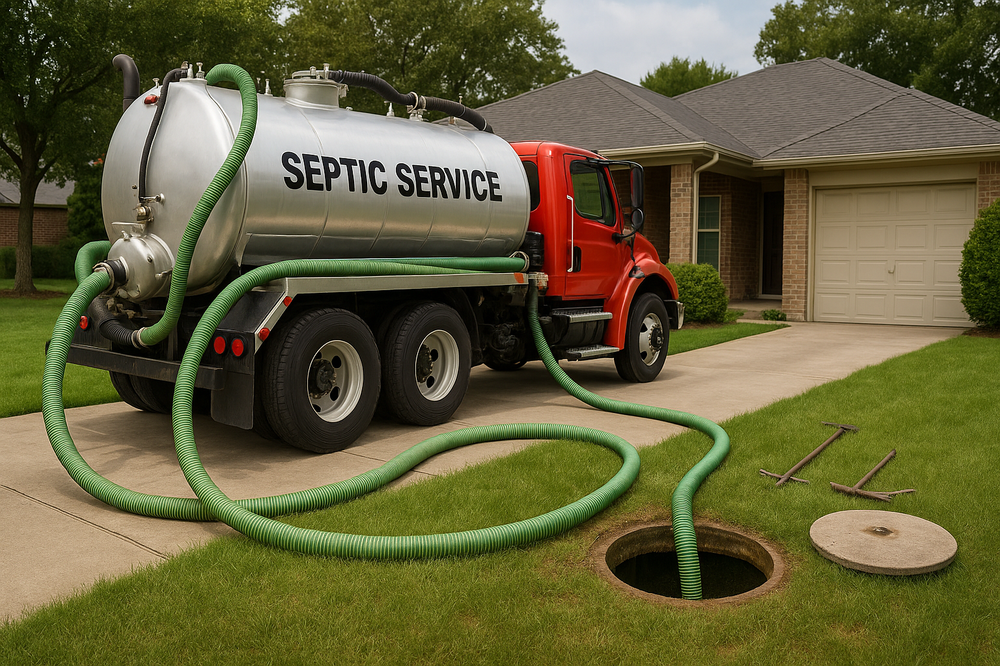

Septic System
Maintenance Guide
Keep your septic system running smoothly with our comprehensive maintenance guide. Learn pumping schedules, seasonal care tips, and best practices to extend your system's lifespan.
Maintenance Schedule
Follow this timeline to keep your septic system in optimal condition year-round.
Monthly
- Check for odors
- Monitor drains
- Inspect lawn area
Annually
- Professional inspection
- Check baffles
- Measure sludge level
3-5 Years
- Septic pumping
- Full system cleaning
- Component check
As Needed
- Repairs
- Component replacement
- Emergency service
How Often Should You Pump?
Regular pumping is the most important maintenance task for your septic system. The frequency depends on household size, tank capacity, and usage patterns.
Key Factors Affecting Pumping Frequency
- Number of people in household
- Size of septic tank (gallons)
- Daily water usage habits
- Use of garbage disposal
Pro Tip: It's better to pump too early than too late. Waiting too long can cause solids to enter the drain field, leading to costly repairs.
Recommended Pumping Schedule
| Household Size | Tank Capacity | Pumping Interval |
|---|---|---|
| 1-2 Residents | 500-1,000 gal | Every 3-5 years |
| 3-4 Residents | 1,000-1,500 gal | Every 2-3 years |
| 5+ Residents | 1,500+ gal | Every 1-2 years |

Professional septic pumping service in action
Do's and Don'ts
Simple habits that can extend your system's life and prevent costly problems.
Do's
-
Spread out laundry days to avoid overloading the system
-
Use water wisely with low-flow fixtures and efficient appliances
-
Keep a septic record with pumping dates and maintenance history
-
Schedule regular pumping based on your household schedule
-
Use septic-safe cleaning products and toilet paper
-
Clean washing machine lint traps regularly
Don'ts
-
Don't flush wipes, diapers, or feminine hygiene products
-
Don't pour grease, oil, or harsh chemicals down drains
-
Don't park or drive vehicles over the septic system
-
Don't plant trees or shrubs near the drain field
-
Don't ignore warning signs like slow drains or odors
-
Don't use garbage disposal excessively
Seasonal Care Guide
Different seasons bring different challenges. Follow these tips to protect your system year-round.
Spring Maintenance
After winter's freeze-thaw cycles, spring is the perfect time to assess your system and address any damage.
- Inspect for winter damage to pipes and components
- Check for leaks around the tank and distribution box
- Clear any debris from drain field area
- Schedule annual inspection if due
Summer Care
High temperatures and increased water usage from outdoor activities require extra attention.
- Monitor water usage during peak summer months
- Protect drain field from heavy traffic and equipment
- Keep grass mowed to prevent root intrusion
- Watch for soggy areas that may indicate problems
Fall Preparation
Prepare your system for the cold months ahead by clearing debris and checking components.
- Clear fallen leaves and debris from drain field
- Have the tank pumped before winter if due
- Inspect and insulate exposed pipes
- Mark system location for snow removal
Winter Protection
Freezing temperatures can damage your system. Take precautions to prevent freeze-ups.
- Insulate exposed pipes and components if needed
- Avoid compacting snow over the drain field
- Use water regularly to prevent freezing
- Fix any leaky fixtures promptly
Download Your Free Maintenance Checklist
Keep track of your septic system maintenance with our comprehensive printable checklist. Includes monthly, annual, and seasonal tasks to keep your system running smoothly.